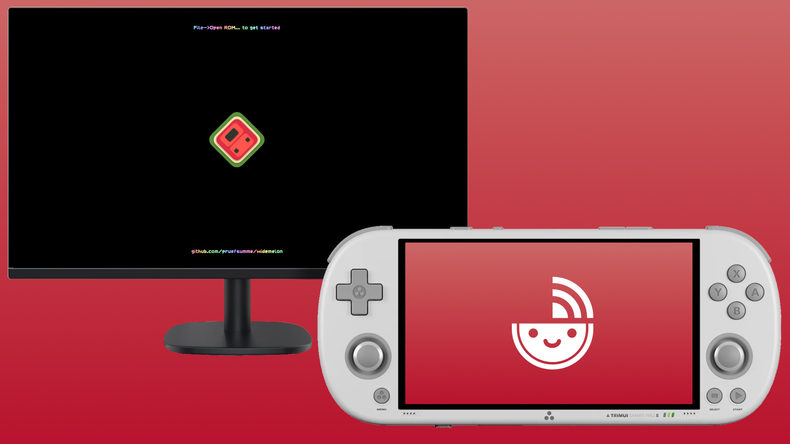

WideMelon Client

"We have the Wii U at home"
What is WideMelon Client ?
WideMelon is an open-source DS emulator based on MelonDS, by pruefsumme.
WideMelon Client is an app for the Trimui Smart Pro S that connects to WideMelon. It converts your handheld into a controller and bottom screen.
WideMelon client features
- Play any DS rom on your computer, use the Smart Pro S as a controller.
- Key mapping : Use L2, R2, L3, R3 as additional inputs. Remap any button to your liking.
- Analog mapping : use the analog sticks in games that normally require touch controls.
- Input configs : save your key mapping configuration to access them easily, per game.